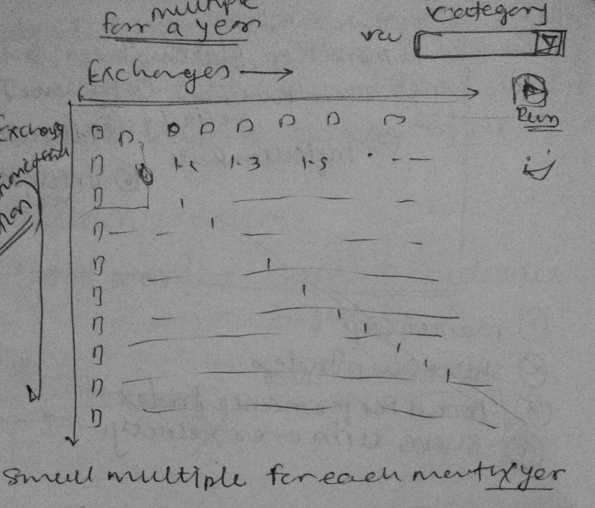

Documentation
Design Process

RATIONALE OF DESIGN CHOICES
Design and Position of Legend
The legend is displayed in a vertical manner to occupy minimal space and positioned at the top so that only the visualization occupies the space below for a distraction-free view. It also keeps every-thing above the fold, eliminating the need to scroll.
Radio Button for State and County
For toggling between State and County radio buttons (and not drop-down menus) have been used to eliminate unnecessary clicks and ease of visibility as switching between these two views is something a user might do frequently.
General Design
In general, we followed a minimalistic design approach, without overwhelming the user with too much information. We used a pleasant color scheme that is both color-blind friendly and does not cause irritation to the user’s eyes with prolonged exposure to it.
Choice of Charts

DISCOVERING FACTS
- The sex-ratio is fairly equal mostly 50-50 (51% Female- 49% Male sometimes.) This shows that if no cultural factors affect the natural process of reproduction then the chances of birth of a male or a female is truly 50-50, since America does not have the issue female feticide, which is gener-ally why certain countries have a skewed sex-ratio.
- Majority of America lies above 1, which is the threshold for income-poverty ratio for a house-hold/individual to be considered above poverty level.
-
There is a co-relation between the educational attainment by place of birth and the presence of established universities in the state, California being the highest

-
More people in states with major cities, like New York and California, prefer to walk. This could probably be because of the high population, crowded streets and maybe because more people can afford to live close to their office.